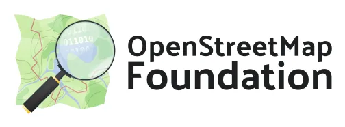

Services Used

Weather Information by the National Weather Service
Provide weather, water and climate data, forecasts, warnings, and impact-based decision support services for the protection of life and property and enhancement of the national economy.
Want to learn more about the NWS?
About NWS | NWS Homepage | NWS API

Mapping by the OpenStreetMap Foundation
The OpenStreetMap Foundation is an international, not-for-profit, democratic organisation. Its mission is to support the OSM project, run and protect the OSM database, and make it available to all as Free and Open data.
Want to learn more about OpenStreetMap?
About Me
I am Samuel Kinaitis, the author of this website, if you would like to learn more about me, you can vist my personal webpage.
About website
Weather Portal is a weather information website that utilizes APIs from the OpenStreetMap Foundation and the National Weather Service. Users can access real-time weather data, forecasts, and alerts. The integration with OpenStreetMap allows for the display of interactive maps and geolocation features, enhancing the overall user experience.